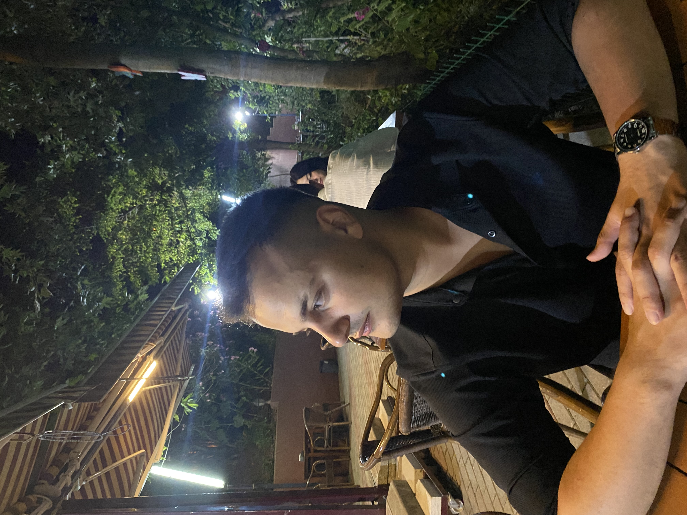

Veri ile
Geleceği
Şekillendir.
Nihat Kütükoğlu
Veri bilimi, veri analizi, yapay zekâ ve iş zekâsı alanlarında teknik bilgimi iş süreçleriyle birleştirerek ölçülebilir ve ölçeklenebilir çözümler üretiyorum.

Python & SQL
Power BI
AI Destekli Uygulama
İş Analizi
Makine Öğrenmesi
Raporlama
Hakkımda
Yönetim Bilişim Sistemleri öğrencisi olarak veri bilimi, veri analizi, yapay zekâ ve iş zekâsı alanlarında kendimi geliştiriyorum. Deneyimlerimle teknik bilgimi iş süreçlerine entegre etme konusunda pratik kazandım. Analitik düşünme becerisine sahip, takım çalışmasına yatkın ve teknolojik çözümler üretmeye odaklı bir adayım.
KONUM
Balıkesir / Bandırma
EĞİTİM
Yönetim Bilişim Sistemleri
İLGİ ALANLARI
Veri Bilimi, Yapay Zekâ, İş Zekâsı
Yetenekler & Uzmanlık Alanları
Veri Analizi
Veri Görselleştirme
AI Destekli Uygulama Geliştirme
İş Analizi & Raporlama
Makine Öğrenmesi
Web & Veritabanı
Eğitim
Yönetim Bilişim Sistemleri
Bandırma Onyedi Eylül Üniversitesi
ÖNE ÇIKAN DERSLER
Tıbbi Dokümantasyon ve Sekreterlik
Anadolu Üniversitesi
ÖNE ÇIKAN DERSLER
Sağlık bilişimi ve yapılandırılmış veri yönetimi perspektifiyle, teknik veri analizi becerilerini sağlık sektörü süreçlerine taşıyan tamamlayıcı bir uzmanlık alanı.
Deneyim
Bilgisayar Operatörü
Ocak 2024 – Temmuz 2024AUTO KING
- ▸Kurumsal ERP/CRM sistemlerine hızlı adapte olunarak operasyonel veri girişleri hatasız şekilde yapıldı.
- ▸Günlük iş emirleri sistem üzerinden takip edildi, raporlandı ve teknik birimlerle koordinasyon sağlandı.
- ▸Ofis yazılımları ve otomasyon sistemleri etkin kullanılarak veri akış hızı ve operasyonel verimlilik desteklendi.
Bilgi Teknolojileri Stajyeri
Kasım 2025 – Ocak 2026TNC Group Şirketleri
- ▸SQL ve veritabanı yönetimi süreçlerine katılım sağlandı.
- ▸Veri doğrulama ve sorgulama işlemlerinde teknik destek sunuldu.
- ▸İş Zekâsı projelerinde Python ve veri analizi yetkinlikleri raporlama süreçlerine entegre edildi.
- ▸Karar destek mekanizmalarına katkı sağlandı.
Yazılım Geliştirme Stajyeri
Haziran 2026 – Devam EdiyorAGARTHA TEKNOLOJİ
- ▸.NET ve C# teknolojileri kullanılarak kurumsal yazılım mimarilerinin ve servislerin geliştirilmesi süreçlerine katılım sağlandı.
- ▸İlişkisel veri tabanları üzerinde SQL sorgularının optimizasyonu, veri modelleme ve veri yönetimi süreçleri yürütüldü.
- ▸Yazılım sistemlerinden elde edilen verilerin analiz edilmesi, anlamlandırılması ve analitik raporlama süreçlerinin sistem mimarisine entegrasyonu sağlandı.
- ▸Temiz kod (Clean Code) prensipleri doğrultusunda kod kalitesi artırıldı ve Agile/Scrum metodolojilerine uygun olarak takım içi koordinasyon desteklendi.
Kurucu / Yazılım ve Dijital Çözüm Geliştirici
Haziran 2026 – Devam EdiyorTEKNOVA
- ▸KOBİ, esnaf ve bireysel müşterilere yönelik web sitesi, CV/portföy sitesi ve dijital tanıtım çözümleri geliştirildi.
- ▸Müşteri ihtiyaçları analiz edilerek tasarım, içerik planlama, geliştirme ve yayınlama süreçleri uçtan uca yönetildi.
- ▸Google Maps görünürlüğü, rakip analizi, yorum analizi ve dijital işletme raporlamalarıyla karar destek süreçlerine katkı sağlandı.
- ▸Modern web teknolojileri ve yapay zekâ destekli araçlar kullanılarak hızlı, düşük maliyetli ve işlevsel dijital çözümler üretildi.
Projeler & Analizler
Veri, yapay zekâ, otomasyon ve iş süreçlerini birleştiren projeler.
Banka Müşteri Davranışı Analizi
Bir bankanın müşterilerinin vadeli mevduat hesabı açma olasılıklarını tahmin etmeyi amaçlayan Makine Öğrenmesi (Machine Learning) ve Web Uygulaması projesi.
Random Forest algoritması ile sınıflandırma modeli eğitilmiş ve Streamlit üzerinden interaktif bir simülasyon (What-If Analysis) arayüzü geliştirilmiştir.
DetaySensei AI — ERP/CRM & Yapay Zekâ Asistanı
Veri madenciliği teknikleri ve yapay zekâ entegrasyonu ile geliştirilmiş hibrit bir asistan ve iş yönetim paneli çözümüdür.
Sistem; CRM-ERP, veri madenciliği not defteri ve web arayüzü bileşenleri ile işletme süreçlerini daha otonom hale getirmeyi hedefler.
DetaySpotify Churn Analizi
Spotify kullanıcı verileri üzerinden müşteri kaybını tahmin etmeye yönelik veri bilimi projesidir.
Veri temizleme, özellik mühendisliği ve sınıflandırma algoritmaları ile kullanıcı bağlılığı analizi gerçekleştirilmiştir.
DetayBandırma Menü & Yönetim Paneli
Yerel işletmelerin dijitalleşme süreçlerini destekleyen QR menü ve sipariş yönetim sistemi projesidir.
İşletme sahipleri için dinamik içerik yönetimi ve kullanıcı dostu arayüz tasarımına odaklanılmıştır.
DetaySELECT c.name, COUNT(*)
FROM companies c
JOIN founded f ON f.id = c.id
GROUP BY c.name;
Eski Şirketler Veritabanı Projesi
Dünyanın en eski şirketlerine ait verilerin yapılandırıldığı ve analiz edildiği veritabanı yönetim projesidir.
Karmaşık SQL şemaları, veri doğrulama ve JOIN / Aggregation sorguları uygulanmıştır.
DetayPython Regresyon Projeleri (Koleksiyon)
Çeşitli veri setleri kullanılarak uçtan uca Makine Öğrenmesi (Regression) modelleme tekniklerinin uygulandığı araştırma ve uygulama deposu.
DetayAnadolu ETAP (B2B İş Geliştirme & ERP Paneli)
B2B operasyonel süreçlerini optimize ederek müşteri-firma etkileşimini otonom hale getiren ve operasyonel verimliliği %65 oranında iyileştiren dijital dönüşüm modülü.
ERP entegrasyonu, gerçek zamanlı sipariş/finans analitiği, karar destek ve modern UX tabanlı sistem tasarımı.
Bizim Bandırma Platformu
bizimbandirma.com.tr alan adı üzerinden yayın yapan yerel web platformu ve dijital rehber.
DetayE-Ticaret Veri Analitiği ve Müşteri Segmentasyonu
Şirketlerin pazarlama bütçelerini daha verimli kullanabilmesi için müşteri kitlesini davranışsal verilere göre gruplandıran veri analitiği projesi.
12.000+ satırlık veri seti üzerinde RFM analizi uygulanmış, K-Means algoritmasıyla "Şampiyonlar", "Risk Altındakiler" ve "Yeni Müşteriler" segmentleri oluşturulmuştur.
İş etkisi: Pazarlama stratejileri için veri odaklı karar destek mekanizması kurgulanmış ve churn önlemeye yönelik aksiyon planları sunulmuştur.
DetaySertifikalar & Eğitimler
Veri Bilimi ve Makine Öğrenmesi 2026: 100 Günlük Kamp
Atıl Samancıoğlu · Academy Club
Python Dilini Öğrenin: Sıfırdan İleri Düzey
Tuncay Erol
Microsoft Power BI | Power Query-Power Pivot-DAX
Oğuzhan Çolak
Alıştırmalarla SQL Öğreniyorum
Ömer Çolakoğlu
Sorgularla Adım Adım SQL Veri Tabanı Programlama
Murat Yücedağ
HTML 101 & 201: Web Programlama Temelleri
Turkcell Geleceği Yazanlar
Endüstri 4.0 ve IIoT Güvenliği
CFE Certification
İhracatta Hedef Pazar Tespiti
M. Arda Uzun
ERP'yi Öğren Geleceği Yönet Konferansı
BANÜ-YBS Topluluğu
CYBERSHIELD: Siber Güvenlik ve Bilgi Güvenliği
BANÜ-YBS Topluluğu
# Galeri & Belgeler
Birlikte Çalışalım
Veri analizi, yapay zekâ, iş zekâsı ve yazılım projeleri için benimle iletişime geçebilirsiniz.